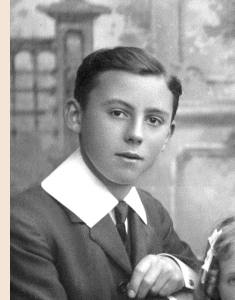

|
In commemoration of a hundredth anniversary
by John Winsor, December 2011.
|
|
Christmas in 2011 has a special significance because it is the one-hundredth anniversary of CHUMS ANNUAL 1911. This book is a compendium of all the weekly issues of Chums magazine published in 1911 and was a Christmas present to Arthur Thomas Handley from his parents. Eventually it passed to my mother, from her to myself, and from me to other descendants of the Handley family. My gift of Chums in 2002 marked the start of the "Handley Family" project (cf. Internet: About this Website) which comprised the distribution of various heirlooms, photographs, anecdotes and reminiscences. I think the hundredth anniversary of the book is a propitious time to close this project so that, in a sense, it is ending where it started. For the last nine years I have travelled a circular path in which I have distributed all the memorabilia in my possession (whether the recipients wanted them or not). I think that family connections are uniquely powerful, even connections with those ancestors and family members for whom no memory exists today. Heirlooms are tangible symbols of those connections and can manifest a power of their own. I have sought to evoke that power only in ways that are positive. I would say that Chums is the "jewel in the crown" of the Handley legacy, the best of my collection of their heirlooms. As a young person I would read Chums avidly and the stories are still brilliant in my memory. It became my most cherished possession. The stories, pictures and even the advertisements are an open window on the social climate of 1911. From the perspective of the twenty-first century the book is a treasure of great intellectual value. These are some of the reasons why the book has survived a hundred years. When my mother first introduced me to Chums it was in pristine condition. It seemed that Arthur Thomas had hardly opened it. Perhaps he felt that the book was intended for boys slightly younger than his own age of 16 years in 1911. Initially my mother seemed to have a policy of restricting my access to the book, no doubt to preserve its condition. I must admit that the book did accumulate a small amount of damage, but the greatest threat would be the deterioration of the paper which is only of newsprint quality. Today, Chums has some of the characteristics of a "time capsule". I hope it will remain within the family for another hundred years at least and that many will benefit from reading it. Happy hundredth birthday, Chums. Click HERE for an Internet link to lots of historical information about Chums. To return to this page click on the LEFT arrow (top left of browser). |